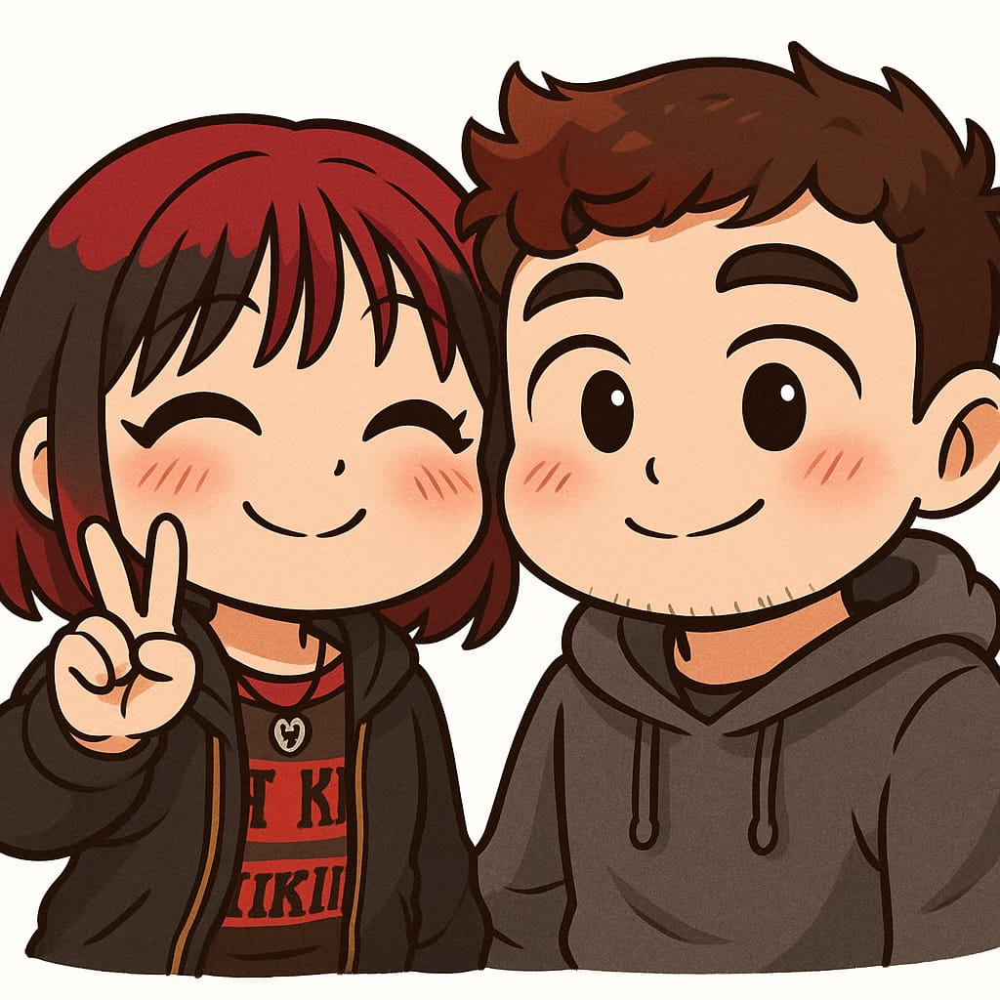

Para la mejor novia del mundo
La primera vez que te vi dije, es hermosa, me gustaste altiro, me encantaste desde el primer momento, pero dije: no creo que se fije en mí, después me acuerdo un día que sin querer en matemáticas cuando te paraste pusiste tu mano encima de la mía y como creí que fue sin querer no hice nada pero me gustó, como que me hizo feliz pensar que había algo más detrás, pero en el fondo seguía creyendo que no te fijarías en mí.
Luego fue donde nos dijimos que nos gustábamos, y de verdad que estaba feliz. Pasé toda la semana de que llegaba al depa y me ponía a reír solo, incluso aún lo hago cuando te recuerdo. Me haces muy feliz de verdad. No pasa un día desde que nos conocimos que no pienso en ti. Me acuesto pensando en ti, me despierto pensando en ti. No imagino un día sin ti.
No sabes lo mucho que te extraño ahora mismo y no poder estar ahí contigo, pero te prometo que cuando nos volvamos a ver te daré todo el amor que no te di en los días que no nos vimos. Te amo demasiado, es la primera vez que siento tanto por alguien. Es como una necesidad, como cuando tienes ganas de ir al baño, pero de querer estar contigo todo el tiempo, y no se va hasta el momento de estar contigo.
Incluso a veces cuando no estamos juntos pero hacemos una llamada, ya con solo una llamada me siento feliz, literal me anima al instante. De verdad que no me imagino una vida sin usted, la quiero pasar toda con usted, darle regalitos, darle salidas sorpresas, y muchas más cosas que si las anoto no termino nunca.
La amo de verdad con todo mi corazón, gracias por existir y gracias por darme la oportunidad de ser su novio, me ha hecho el hombre más feliz del mundo.
TE AMO CON TODO MI CORAZ√ìN MI PRINCESA HERMOSA üíó
